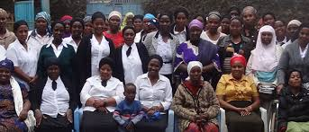

Home
About Us
Contact
Services
Events
Groups
Mewak
The devoted women of MEWAK who inspire, nurtcher, and serve with unwavering faith and love.
Back to groups
Messianic Women Association of kenya

A picture of our beloved mothers and sisters...